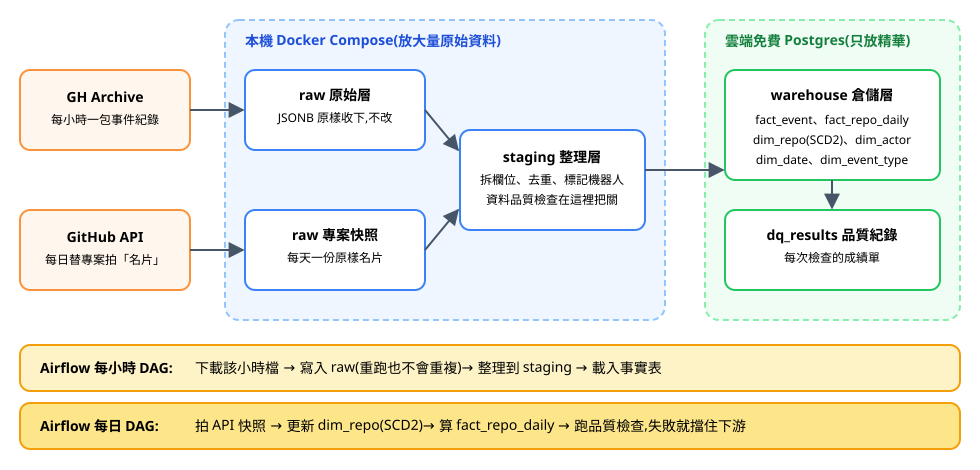
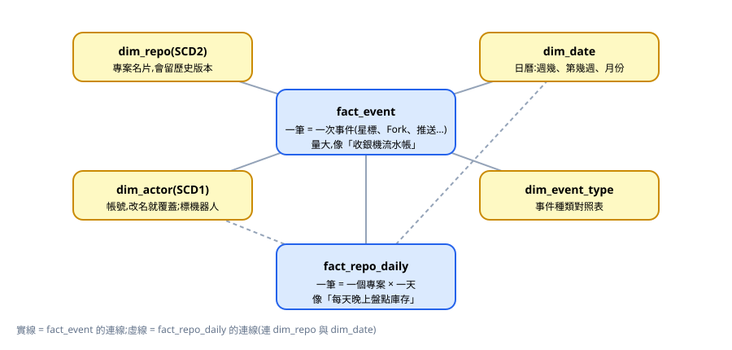
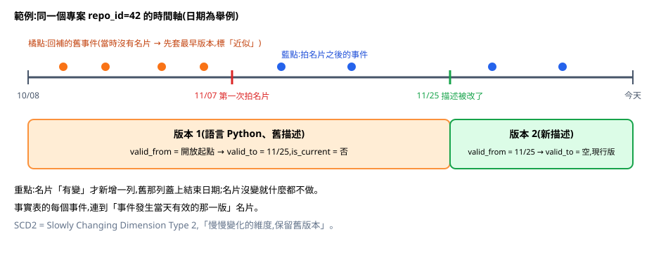

維基百科編輯資料倉儲專案:新手說明書
這份文件寫給「完全不認識這份資料」的人。內容是目前的規劃(專案尚未開始寫程式),對應 SPEC.md v0.2(2026-11-12)。文中的數字來自 2026-11-11 的實測,除非另外註明。最後有 12 題選擇題,作答後才會顯示答案與原因。
1. 這個專案到底在做什麼?
一句話:把中文維基百科上的每一次編輯,每小時收集起來,整理成一本「查得快、查得準、不會算錯」的帳本,回答像「哪一類頁面最常被改?頁面改名之後,編輯變多還是變少?哪些頁面這週長最多?」這樣的問題。
用早餐店來想
| 早餐店 | 這個專案 |
|---|---|
| 收銀機每一筆交易的流水帳 | fact_edit:每一次編輯或新建頁面是一筆 |
| 每天打烊盤點有動過的貨架 | fact_page_daily:當天被編輯過的頁面,各記一筆「今天結束時多大」 |
| 菜單、會員名片 | 維度表(dim_*):頁面名片、使用者、日曆、哪個維基 |
| 菜單改名,但要記得「以前叫什麼」 | SCD2:頁面改名了,保留舊版本 |
| 倉庫裡堆滿的原始進貨單 | raw 原始層:先原樣收下,不改 |
2. 資料介紹:我們到底吃什麼資料?
唯一的資料來源:維基百科的「最近變更」清單
任何人在維基百科編輯、建立、改名一個頁面,都會多一筆公開紀錄。維基百科提供一個免費、免註冊的查詢介面(API),可以問「某個小時內發生了哪些事」,拿回一批 JSON。我們每小時問一次。
最常見的是編輯(實測抓到的真資料):
{ "type": "edit", "title": "马若德", "pageid": 1061969,
"user": "Jacklamf1d14", "userid": 1400049,
"oldlen": 5234, "newlen": 5224,
"timestamp": "2026-11-10T12:00:00Z", "rcid": 205425929 }
// 白話:某人在這個時間改了「马若德」,內容從 5234 位元組變成 5224。
// rcid 是這筆紀錄的流水號,用來判斷「收過了沒」。另一種是改名(也是真資料),這是 SCD2 的原料:
{ "type": "log", "logtype": "move", "title": "蘇柏傑", "pageid": 9656898,
"timestamp": "2026-11-10T00:01:21Z",
"logparams": { "target_ns": 118, "target_title": "Draft:蘇柏傑" } }
// 白話:頁面 9656898 原本叫「蘇柏傑」,被移成「Draft:蘇柏傑」
// (從正式條目退回草稿區)。舊名、新名、時間都在同一筆裡,pageid 不變。logparams 裡的欄位會隨動作種類而不同:改名的長這樣,封鎖帳號的是另一組,保護頁面的又是另一組。這種「形狀不固定」的資料,就是 raw 層用 JSONB 的理由。
實測的數字(2026-11-10 整天,實測於 2026-11-11)
| 項目 | 數字 | 備註 |
|---|---|---|
| 中文版 12 時那一小時 | 2,802 筆 | 逐頁抓完的精確數字;流水號沒有重複;其中 839 筆帶機器人標記 |
| 那一小時的組成 | 編輯 2,069、分類變動 678、新建 28、管理日誌 27(改名 5) | 只有「編輯」和「新建」會進事實表 |
| 中文版一整天 | 約 4.1 萬筆 | 估計值,用流水號的差距推算 |
| 中文版 30 天 | 約 124 萬筆 | 估計值,只量了一天 |
| 英文版 30 天 | 約 1,060 萬筆 | 估計值;本專案先不收英文版 |
| 來源保留多久 | 30 天 | 2026-10-14 的資料查得到,2026-10-12 的已經查不到 |
| 限速 | 每 2 秒問一次,79 次裡被擋 6 次 | 被擋時來源會說要等幾秒(約 30 秒),等完重試即可 |
| Neon 免費方案 | 1 GB 儲存,閒置 5 分鐘休眠,連線時自動醒來 | 官方方案頁,查證於 2026-11-07 |
3. 整體架構

怎麼讀這張圖?(像一條食品工廠生產線)
| 站 | 白話 | 生活比喻 |
|---|---|---|
| raw 原始層 | 拿到的 JSON 原封不動存起來,永不刪除 | 進貨先放倉庫,不拆封;出錯時能回頭查「當初收到什麼」 |
| staging 整理層 | 拆成欄位、去掉重複、分出「編輯」和「改名」 | 洗菜、切菜 |
| warehouse 倉儲層 | 最終給人查詢的星狀模型 | 擺上貨架的成品 |
| dq_results | 每次品質檢查的成績單 | 品管紀錄表 |
| Airflow | 排程員,到時間就叫各站開工、失敗會重試 | 工廠的排班主管 |
| 雲端(Neon) | M5 時把成品複製一份上去,讓別人連得到 | 把成品送到門市櫥窗 |
三層都在你電腦上的同一個資料庫裡,用不同的「資料夾」(schema)分開。雲端那份是最後才發布的副本。
兩條排程為什麼分開?每小時那條只管「收貨、整理、檢查」,各小時互不相干,可以同時跑、亂序跑。每日那條才更新帳本,而且一定「先更新頁面名片,再記流水帳」,一天一天照順序來。原因見第 5 節第 ⑩ 項。
4. 資料怎麼建模?

星狀模型是什麼?
把「發生的事」放中間(事實表),把「這件事的背景資訊」放四周(維度表),畫起來像星星。好處:查詢時只要「中間 JOIN 四周」,簡單又快。就像發票(事實)上只寫商品編號,商品名稱、價格都去商品目錄(維度)查。
SCD1 與 SCD2:名片改了怎麼辦?
| SCD1:直接覆蓋 | SCD2:保留舊版本 | |
|---|---|---|
| 生活比喻 | 手機通訊錄,朋友換號碼就改掉 | 戶籍資料,搬家要留「以前住哪、住到何時」 |
| 什麼時候用 | 舊值沒有分析價值(使用者改名) | 舊值會影響分析結論(頁面從條目被退回草稿) |
| 本專案 | dim_user | dim_page |

頁面名片上只記兩個欄位:標題和命名空間(正式條目、草稿、討論頁…)。這兩個欄位只會因為「改名」而變,而每次改名都有一筆帶時間的紀錄,所以能追得很準。
5. 每個決定的 Why
每一項都附「放棄了什麼」,方便你面試時回答「為什麼不選另一個」。
① 為什麼選維基百科?原本的 GH Archive 怎麼了?
經過:第一版選 GH Archive(GitHub 公開事件的每小時存檔)。2026-11-11 實測發現它壞了:同樣是 12 時那個小時,10 月 20 日有 58,084 筆,11 月 9 日只剩 2,958 筆,而且完全沒有「推送程式」的事件,這在 GitHub 上不可能是真的。負責收集的程式從 2025 年 5 月後就沒人更新。
比喻:一台應該全程錄影的監視器,現在每幾秒才拍一張,管理員已經離職,漏掉的畫面補不回來。
Why 維基百科:由維基媒體基金會營運;每小時都有新資料;JSON 的形狀不固定;最重要的是頁面改名是一筆帶時間的紀錄,SCD2 有真的變更可以處理,而且過去 30 天的都查得到。只需要一個來源。
放棄:留著 GH Archive(分析結果不可信,來源可能停擺);證交所開放資料(題材和金融業相關,但只有每日一筆、欄位扁平);YouBike 即時站點(沒有歷史可回補);你自己的職缺資料(沒有每小時增量)。完整比較在 docs/adr/0001-dataset-wikipedia-recentchanges.md。
② 為什麼本機 Docker Compose + 免費雲端 Postgres?
Why:Airflow 吃記憶體,免費雲端主機跑不穩;但全本機又沒有雲端經驗可寫。折衷:排程和重活在本機,成品發布到雲端,順便練連線與機密管理。
放棄:全本機(雲端經驗薄);Oracle 免費 VM 全上雲(額度不穩、維運花時間)。
③ 為什麼三層先全放本機,最後才發布到雲端?
Why:寫流水帳時要去查「當時是哪一版名片」,而且要求「整段成功或整段取消」。如果名片在雲端、整理好的資料在本機,這件事要跨兩個資料庫,很難做對,測試也會被網路拖累。全部放同一個資料庫最單純;M5 再把成品複製一份到 Neon。
要誠實說的:雲端那份是「發布副本」,不是管線直接寫進去的。
放棄:一開始就直接寫雲端(開發和測試都依賴網路與免費額度);全部放雲端(原始資料放不下)。
為什麼選 Neon:閒置會休眠,但有人連線就自動醒來;另一家 Supabase 一週沒活動會暫停,要手動恢復,面試官點連結時可能連不上。
④ NoSQL 的角色為什麼只在 raw 層?
Why:倉儲要的是「固定欄位、可 JOIN、可驗證」,這正是關聯式資料庫的強項。NoSQL 的長處是「資料形狀常變、先收下再說」,正好對應 raw 層:改名、封鎖、保護的紀錄各有不同欄位。我們用 Postgres 的 JSONB 欄位就能做到,少維護一個服務,並寫一份 JSONB 與 MongoDB 的取捨文件。
放棄:另加 MongoDB(像為了用而用);完全不放(違背「做中學」)。
⑤ 為什麼有兩張事實表?
Why:流水帳(每次編輯)與每日盤點(頁面今天多大)是兩種不同性質的資料。「這次編輯增加了幾個位元組」可以直接加總;「頁面大小」不能跨天相加(今天 5,000、明天 5,200,不是 10,200),叫「半可加」。兩張都做,才能講清楚這個概念。
一個取捨:第二張表只記「當天有被編輯的頁面」。沒被編輯的頁面那天沒有列,要查它的大小時得找「最近一次有紀錄的值」。這樣列數少很多;代價是查詢比較繞,而這個繞法是面試常考的 SQL 題。
放棄:每個頁面每天都記(列數會比流水帳還多,而且大多只是重複昨天);不做第二張(半可加的概念沒有實作可講)。
⑥ 為什麼 dim_page 用 SCD2、dim_user 用 SCD1?
Why:頁面從「條目」被退回「草稿」會影響「哪一類頁面最常被改」的結論,舊值有價值;使用者改名沒有分析價值,追歷史只是增加複雜度,面試也答不出「為什麼要追」。
放棄:兩個都 SCD2(手寫量加倍,而且使用者權限也有到期沒紀錄的問題);連保護狀態一起追(見第 4 節的說明)。
⑦ SCD2 的資料從哪來?
Why:直接來自同一條資料流裡的「改名」紀錄,精確到秒。中文版一個小時就有好幾筆,所以面試被問「你的 SCD2 實際處理過幾次變更」時有真數字可答。單元測試另外用明確標示為合成的資料驗證各種邊界情況。
頁面第一次出現時:建立第一版,起點設成「無限早」。回補區間之前的編輯本來就不載入,所以不會有流水帳連錯版本。
⑧ 為什麼機器人標記放在流水帳,不放在使用者名片?
Why:來源的機器人標記是「每一筆編輯」各自帶的,同一個帳號不一定每筆都有。照來源給的樣子記,不自己猜「這個帳號是不是機器人」。
順帶:所有沒登入的編輯都算在同一位「匿名」使用者名下,不儲存 IP 位址。
⑨ 冪等是什麼?為什麼這樣設計?
白話:電梯按鈕按十次,效果跟按一次一樣。排程失敗重跑時,重跑同一段時間不該多出重複資料或漏資料。
Why:raw 層用「哪個維基 + 流水號」判斷「收過了就略過」;整理層以小時為單位、事實表以日為單位,把那一段整個刪掉再重新寫入,而且放在同一個交易裡,中途失敗就整段退回,不會留下半套資料。這段由你手寫。
放棄:每筆都 MERGE(大表慢);每次全部重載(失去增量的意義)。
⑩ 為什麼「先更新名片,再記流水帳」,而且一天一次?
問題:流水帳的每一筆要連到「編輯當時」的頁面版本。假設 10:20 有人編輯、10:40 頁面被改名。如果各小時是亂序處理的(回補 30 天時就會這樣),可能先處理到後面的小時,名片已經是改名後的樣子,回頭處理前面的編輯時就連錯版本。
Why:每小時那條只做「收貨、整理、檢查」,亂序也沒關係。每天結束後跑一次:先用當天所有改名紀錄更新名片,再把當天的編輯寫進流水帳;天與天之間照順序。規則簡單,重跑的結果也確定。
放棄:每小時都更新名片和流水帳(720 個小時必須嚴格照順序、一次跑一個,一個失敗就卡住後面全部)。代價是流水帳每天才更新一次,但這個專案沒有人需要當小時的數字。
⑪ 資料治理與品質怎麼做?
Why:手寫檢查:有沒有空值、有沒有重複、流水帳的頁面在名片表找不找得到、名片的版本期間有沒有重疊或斷掉、資料新不新鮮、筆數對不對得上。結果寫進 dq_results,失敗就擋住下游,再加欄位血緣與資料字典文件。手寫才能在面試說清楚每條規則為什麼存在。
從 GH Archive 學到的一條:某個小時的筆數如果低得離譜就警告。來源變少時要第一時間知道,而不是一個月後才發現。
要誠實說的:門檻(超過 3 小時沒新資料、單小時低於 300 筆)是起始值,不是量出來的最佳值,M3 會調整。
放棄:Great Expectations(設定重、會藏住邏輯);只做檢查不記錄(沒有可審計紀錄)。
⑫ 為什麼先寫純 SQL,再用 dbt 對照?
Why:dbt 的 snapshot 會自動產生 SCD2,等於把你最該親手理解的邏輯藏起來。先手寫,再用 dbt 重做同一張維度做比較,面試談 dbt 才有根據。dbt 對照排在最後(M6),是加分題,時間不夠就標示「未實作」。
放棄:一開始就用 dbt(學習目標落空)。
⑬ K8s 和 MLOps 為什麼只做「設計、未實作」?
Why:這兩項不在你的最高優先,做到一半的實作反而容易在面試被追問露餡。履歷與 README 明確區分「已實作」和「僅設計」,誠實回答最安全。
放棄:現在就實作(拖慢核心進度);完全不提(第 6 項目標落空)。
⑭ 你手寫什麼、AI 寫什麼?
Why:手寫的是「寫錯會被追問」的核心:SCD2 merge SQL、冪等載入、資料品質檢查。AI 負責 Docker、DAG 骨架、向維基百科要資料(分頁、被限速時重試)、解析等樣板,並當挑戰者與 reviewer。這也是在練「你出需求、定架構、做驗收」的協作方式。
⑮ 倉儲要回答哪三個問題?
Why:先定好要回答的問題,表才知道該長什麼樣。每一題各逼出一個要會講的概念:
| 問題 | 練到的概念 |
|---|---|
| A. 各命名空間每天被編輯幾次、內容淨增減多少 | 可加總的事實;用「編輯當時」的命名空間歸類 |
| B. 頁面改名前後 7 天的編輯量;用「當時的標題」和「現在的標題」各算一次 | SCD2 的價值:不留歷史會算錯 |
| D. 每週內容成長最多的頁面 | 半可加:大小不能跨日相加,要用期末減期初 |
展示方式是 SQL 範例,不做儀表板。
⑯ 里程碑、時程與版本控制
Why:順序是 M1 抓資料與 raw 冪等載入 → M2 星狀模型 + SCD2 → M3 資料品質 → M4 Airflow → M5 雲端 + 文件 → M6 dbt 對照。目標約 4 週,M1 到 M5 必交,M6 是加分題。把最高優先、最常被追問的先做完,中途被打斷也有成果。每個里程碑完成就 commit,並維護 RESUME.md。之後用 GitHub Actions 跑 pytest。文件分工:README 用英文,設計與決策文件用中文。
6. 必須誠實面對的限制
| 限制 | 面試怎麼說 |
|---|---|
| 題材和金融業無關 | 原本選 GitHub 事件資料,設計階段實測發現來源退化,用數字重新評估後改選;選題看的是每小時增量、形狀不固定的 JSON、真的會變的維度 |
| 資料量小(30 天約百萬筆) | 履歷寫實際筆數,不寫「大數據」;M5 評估加英文版(約 10 倍)做加索引前後的對照 |
| 來源只留 30 天 | 原始層是唯一副本,永不刪除,每週備份 |
| SCD2 只追標題與命名空間 | 保護狀態到期時沒有紀錄,追不準,列為範圍外 |
| 每日盤點表不是每天都有列 | 只記有編輯的頁面,並示範怎麼取最近一次的值 |
| 品質檢查的門檻是起始值 | 文件標明不是量測出來的最佳值 |
| 資料量是估計 | 只量了一天,數字附量法與日期 |
| K8s、MLOps 只有設計 | 履歷與 README 標明「設計、未實作」 |
| 免費額度與限速規則可能改變 | 數字附查證日期,部署前再確認一次 |
7. 名詞小辭典
| 名詞 | 一句白話 |
|---|---|
| 資料倉儲 | 專門為「分析與報表」整理過的資料庫 |
| 事實表 / 維度表 | 發生的事(流水帳)/ 事情的背景資料(名片) |
| 星狀模型 | 事實表在中間、維度表在四周的設計 |
| SCD | 維度資料變了該怎麼處理(1=覆蓋、2=保留舊版本) |
| ETL | 抽出、轉換、載入:把資料從來源搬進倉儲的整個流程 |
| 冪等 | 同一個動作重做多次,結果和做一次一樣 |
| 增量 / 全量 | 只處理新增的部分 / 每次整批重做 |
| 回補(backfill) | 補抓過去錯過的資料 |
| Airflow / DAG | 排程工具 / 一條有先後順序的工作流程 |
| JSONB | Postgres 裡存 JSON 的欄位型別,可以直接查裡面的內容 |
| 半可加 | 可以跨頁面加總,但不能跨時間加總的數字(如頁面大小) |
| 命名空間 | 維基百科把頁面分的類:正式條目、草稿、討論頁、使用者頁… |
| 限速(429) | 問太快時來源叫你等一下再問;等完重試即可 |